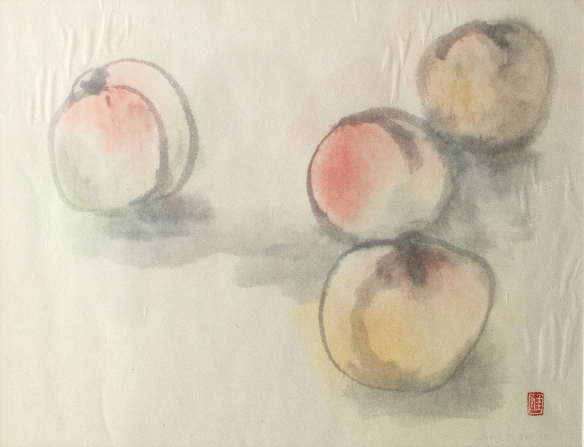

ドゥーラとはとは“母親”またはこれから母親になる女性とその家族を妊娠、出産と産後の間サポートするための特別なトレーニングを受けた女性のことです。
出産中の継続した心のサポートのメリットは、出産経験と新生児の状態にとても良い影響をもたらすと医学的研究でも証明されています。
以前お産が自宅／家族中心であった頃は、お産を経験したことのある母親的存在の女性のサポートを妊婦さんが受けることは当たり前でした。しかしお産が病院中心の現代では忙しい医療関係のスタッフ、シフトで働いている助産婦さん達から継続した心のサポートを受けるのが難しくなっています。ドゥーラはあなた自身が選び、妊娠中から信頼関係を築くことができ、出産の際には始めから終わりまで一緒にいてくれる存在です。そのため、ドゥーラのサポートを受けたお産の方が比較的安産でより満足を得ることができます。
“母親の母親”がドゥーラの立場ですので、妊娠中から産後まで様々な形であなたが母親になる、または母親であることのサポートをしてくれます。ドゥーラは 医療的サポート、アドバイスは行いませんがどのような選択をあなたが取られても、一緒に乗り越え、お産経験をよりよいものに導いてくれる助けをしてくれます。産後ドゥーラ（Postnatal Doula）の場合マタニティナース（乳母）の様に赤ちゃんの世話を任せるのではなく、あなた自身が赤ちゃんの世話をするのをサポートする存在です。
ドゥーラについてもっと知りたい方、どのようなサポートをしてくれるか等ご質問のある方はお気軽にご連絡ください。また LINKS もご参照ください。
出産／産後ドゥーラ（最低２回の１−２時間の産前ケアセッションを含む）サービス、また妊娠初期／中期からのサポートも行っております。
ドゥーラサービス内にホメオパシー、マッサージ等のサービスを加えることも可能です。
ドゥーラサービスをお受けになるならないは関係なく無料でドゥーラ説明訪問を致しておりますのでお気軽にお問い合わせ下さい。お電話でまたは直接面会してのご相談を承っております。
産前のサポート
妊娠初期
出産ドゥーラ
産後ドゥーラ
ドゥーラサービスとホメオパシー＆マッサージ（サービスの内容によっては有料です）
個人々へ向けた personalised serviceを目標としているので料金についてのご相談は直接お問い合わせください。お電話での相談、また直接お会いしてのご相談は無料でさせていただいております。
ドゥーラサービスパッケージ内容の例
* すべてのドゥーラサービスを含むパッケージにはご希望＆必要の場合のみのホメオパシーとマッサージのテクニックを使ったサポートは含まれています。ですが、ホメオパシーの効果をより良く体験していただくためにはフルのコンサルテーションをお勧めいたします。詳しくはお問い合わせください。
Image Credit: Kazuko Mizunami